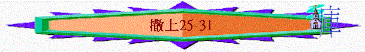

|
成
敗 與 興 衰 |
||
|
事
奉 |
民
族 |
君
王 |
|
1-3 |
4-7 |
8-31 |
三.君王的成敗(8-31)
2.合神心意的大衛(16-31)
B.大衛的逃亡----人的倚靠與神的保守(18:6-31:13)
(10)迦密(25)----接受神的攔阻
(A)神僕的逝去
「撒母耳死了，以色列眾人聚集，為他哀哭，將他葬在拉瑪他自己的墳墓（原文作房屋）裡。大衛起身，下到巴蘭的曠野。」25:1
(B)拿八的惡語
「在瑪雲有一個人，他的產業在迦密，是一個大富戶，有三千綿羊，一千山羊；他正在迦密剪羊毛。」25:2
「大衛在曠野聽見說拿八剪羊毛，大衛就打發十個僕人，吩咐他們說：「你們上迦密去見拿八，提我的名問他安。」25:4-5
「可以問你的僕人，他們必告訴你。所以願我的僕人在你眼前蒙恩，因為是在好日子來的。求你隨手取點賜與僕人和你兒子大衛。』」」25:8
「拿八回答大衛的僕人說：「大衛是誰？耶西的兒子是誰？近來悖逆主人奔逃的僕人甚多，我豈可將飲食和為我剪羊毛人所宰的肉給我不知道從那裡來的人呢？」」25:10-11
〜「迦密」應是猶大南部希伯崙以南一處的地方，大衛的僕人懇求富戶拿八賜糧，但拿八惡言對待他們，更藐視大衛。
(C)惹來的殺機
「大衛曾說：「我在曠野為那人看守所有的，以致他一樣不失落，實在是徒然了！他向我以惡報善。凡屬拿八的男丁，我若留一個到明日早晨，願神重重降罰與我！」」25:21-22
(D)亞比該求情
「亞比該見大衛，便急忙下驢，在大衛面前臉伏於地叩拜，俯伏在大衛的腳前，說：「我主啊，願這罪歸我！求你容婢女向你進言，更求你聽婢女的話。我主不要理這壞人拿八，他的性情與他的名相稱；他名叫拿八（就是愚頑的意思），他為人果然愚頑。但我主所打發的僕人，婢女並沒有看見。我主啊，耶和華既然阻止你親手報仇，取流血的罪，所以我指著永生的耶和華、又敢在你面前起誓說：『願你的仇敵和謀害你的人都像拿八一樣。』」25:23-26
「求你饒恕婢女的罪過。耶和華必為我主建立堅固的家，因我主為耶和華爭戰；並且在你平生的日子查不出有什麼過來。雖有人起來追逼你，尋索你的性命，你的性命卻在耶和華你的神那裡蒙保護，如包裹寶器一樣；你仇敵的性命，耶和華必拋去，如用機弦甩石一樣。」25:28-29
〜亞比該以耶和華的名嘗試阻止大衛殺拿八及拿八的男丁行為
(E)大衛的認同
「大衛對亞比該說：「耶和華以色列的神是應當稱頌的，因為他今日使你來迎接我。你和你的見識也當稱讚；因為你今日攔阻我親手報仇、流人的血。我指著阻止我加害於你的耶和華以色列永生的神起誓，你若不速速地來迎接我，到明日早晨，凡屬拿八的男丁必定不留一個。」」25:32-34
「大衛聽見拿八死了，就說：「應當稱頌耶和華，因他伸了拿八羞辱我的冤，又阻止僕人行惡；也使拿八的惡歸到拿八的頭上。」於是大衛打發人去，與亞比該說，要娶他為妻。」25:39
〜大衛認同神藉亞比該的求情攔阻他行殺人的惡行
(F)至終的結果
「亞比該到拿八那裡，見他在家裡設擺筵席，如同王的筵席；拿八快樂大醉。亞比該無論大小事都沒有告訴他，就等到次日早晨。到了早晨，拿八醒了酒，他的妻將這些事都告訴他，他就魂不附體，身僵如石頭一般。
過了十天，耶和華擊打拿八，他就死了。」25:36-38
「大衛的僕人到了迦密見亞比該，對他說：「大衛打發我們來見你，想要娶你為妻。」」25:40
「大衛先娶了耶斯列人亞希暖，他們二人都作了他的妻。掃羅已將他的女兒米甲，就是大衛的妻，給了迦琳人拉億的兒子帕提為妻。」25:43-44
〜神親自擊打拿八，而大衛也娶了亞比該為妻
〜大衛在逃亡之期間的妻子有亞希暖與亞比該，原先的妻子米甲，因掃羅的擺佈下，已下嫁別人為妻子。
(11)西弗哈(26)----仍敬神立之王
(A)掃羅繼續尋索大衛
「西弗人到基比亞見掃羅，說：「大衛不是在曠野前的哈基拉山藏著嗎？」
掃羅就起身，帶領以色列人中挑選的三千精兵下到西弗的曠野，要在那裡尋索大衛。」26:1-2
〜「哈基拉」----希伯崙南邊的曠野
(B)大衛仍然敬受膏者
「大衛對赫人亞希米勒和洗魯雅的兒子約押的兄弟亞比篩說：「誰同我下到掃羅營裡去？」亞比篩說：「我同你下去。」於是大衛和亞比篩夜間到了百姓那裡，見掃羅睡在輜重營裡；他的槍在頭旁，插在地上。押尼珥和百姓睡在他周圍。亞比篩對大衛說：「現在神將你的仇敵交在你手裡，求你容我拿槍將他刺透在地，一刺就成，不用再刺。」大衛對亞比篩說：「不可害死他。有誰伸手害耶和華的受膏者而無罪呢？」大衛又說：「我指著永生的耶和華起誓，他或被耶和華擊打，或是死期到了，或是出戰陣亡；我在耶和華面前，萬不敢伸手害耶和華的受膏者。現在你可以將他頭旁的槍和水瓶拿來，我們就走。」」26:6-11
「求我主我王聽僕人的話：若是耶和華激發你攻擊我，願耶和華收納祭物；若是人激發你，願他在耶和華面前受咒詛；因為他現今趕逐我，不容我在耶和華的產業上有分，說：『你去事奉別神吧！』現在求王不要使我的血流在離耶和華遠的地方。以色列王出來是尋找一個虼蚤，如同人在山上獵取一個鷓鴣一般。」」26:19-20
〜雖然仇敵多前背信棄義，但大衛因為敬畏神綠故，仍然不敢加害神所立的君王
〜「虼蚤」即虱子，形容自己微小
(C)掃羅仍然承認過錯
「掃羅說：「我有罪了！我兒大衛，你可以回來，因你今日看我的性命為寶貴；我必不再加害於你。我是糊塗人，大大錯了。」」26:21
「掃羅對大衛說：「我兒大衛，願你得福！你必做大事，也必得勝。」於是大衛起行，掃羅回他的本處去了。」26:25
〜但掃羅仍是反覆的人，他仍想尋索大衛的命，直至大衛逃至非利士地，他才停止尋索行動。
(12)非利士地(27-31)----倚靠神的拯救
(A)逃至非利士
「大衛心裡說：「必有一日我死在掃羅手裡，不如逃奔非利士地去。掃羅見我不在以色列的境內，就必絕望，不再尋索我；這樣我可以脫離他的手。」
於是大衛起身，和跟隨他的六百人投奔迦特王瑪俄的兒子亞吉去了。」27:1-2
〜大衛再次進入非利士地，投奔迦特王
(B)得到王信任
「大衛和跟隨他的人上去，侵奪基述人、基色人、亞瑪力人之地。這幾族歷來住在那地，從書珥直到埃及。大衛擊殺那地的人，無論男女都沒有留下一個，又奪獲牛、羊、駱駝、驢，並衣服，回來見亞吉。亞吉說：「你們今日侵奪了什麼地方呢？」大衛說：「侵奪了猶大的南方、耶拉篾的南方、基尼的南方。」」27:8-10
「亞吉信了大衛，心裡說：「大衛使本族以色列人憎惡他，所以他必永遠作我的僕人了。」」27:12
〜大衛得了南地，在亞吉看來，只是以色列南邊土地，有助非利士人擴展，因此對大衛有信心。
(C)掃羅求巫術
「耶和華照他藉我說的話，已經從你手裡奪去國權，賜與別人，就是大衛。因你沒有聽從耶和華的命令；他惱怒亞瑪力人，你沒有滅絕他們，所以今日耶和華向你這樣行，並且耶和華必將你和以色列人交在非利士人的手裡。明日你和你眾子必與我在一處了；耶和華必將以色列的軍兵交在非利士人手裡。」」28:17-19
(a)神沒有回應掃羅
「非利士人聚集，來到書念安營；掃羅聚集以色列眾人在基利波安營。掃羅看見非利士的軍旅就懼怕，心中發顫。」28:4-5
(b)在難處尋求巫術
「那時撒母耳已經死了，以色列眾人為他哀哭，葬他在拉瑪，就是在他本城裡。掃羅曾在國內不容有交鬼的和行巫術的人。」28:3
「掃羅吩咐臣僕說：「當為我找一個交鬼的婦人，我好去問他。」臣僕說：「在隱多珥有一個交鬼的婦人。」於是掃羅改了裝，穿上別的衣服，帶著兩個人，夜裡去見那婦人。掃羅說：「求你用交鬼的法術，將我所告訴你的死人，為我招上來。」」28:7-8
「婦人說：「我為你招誰上來呢？」回答說：「為我招撒母耳上來。」婦人看見撒母耳，就大聲呼叫，對掃羅說：「你是掃羅，為什麼欺哄我呢？」王對婦人說：「不要懼怕，你看見了什麼呢？」婦人對掃羅說：「我看見有神從地裡上來。」掃羅說：「他是怎樣的形狀？」婦人說：「有一個老人上來，身穿長衣。」掃羅知道是撒母耳，就屈身，臉伏於地下拜。」28:11-14
「這樣，掃羅死了。因為他干犯耶和華，沒有遵守耶和華的命；又因他求問交鬼的婦人，沒有求問耶和華，所以耶和華使他被殺，把國歸於耶西的兒子大衛。」代上10:13-
14
(c)撒母耳直斥掃羅
「撒母耳對掃羅說：「你為什麼攪擾我，招我上來呢？」掃羅回答說：「我甚窘急；因為非利士人攻擊我，神也離開我，不再藉先知或夢回答我。因此請你上來，好指示我應當怎樣行。」」28:15
「耶和華照他藉我說的話，已經從你手裡奪去國權，賜與別人，就是大衛。因你沒有聽從耶和華的命令；他惱怒亞瑪力人，你沒有滅絕他們，所以今日耶和華向你這樣行，並且耶和華必將你和以色列人交在非利士人的手裡。明日你和你眾子必與我在一處了；耶和華必將以色列的軍兵交在非利士人手裡。」」28:17-19
〜似乎掃羅所見的確是撒母耳
〜雖然神是禁止人行邪術及交鬼，但撒母耳應不是鬼，神容許撒母耳的靈魂顯現成人體，指出掃羅的錯誤及預告他死和他眾子必會死亡。
〜有解經家指出可能神差使者來，化作撒母耳樣式
(d)掃羅聞言感懼怕
「掃羅猛然仆倒，挺身在地，因撒母耳的話甚是懼怕；那一晝一夜沒有吃什麼，就毫無氣力。」28:20
(D)靠神勝敵人
(a)非利士人懷疑大衛
「非利士人將他們的軍旅聚到亞弗；以色列人在耶斯列的泉旁安營。」29:1
「非利士人的首領向亞吉發怒，對他說：「你要叫這人回你所安置他的地方，不可叫他同我們出戰，恐怕他在陣上反為我們的敵人。他用什麼與他主人復和呢？豈不是用我們這些人的首級嗎？」29:4
「亞吉叫大衛來，對他說：「我指著永生的耶和華起誓，你是正直人。你隨我在軍中出入，我看你甚好。自從你投奔我到如今，我未曾見你有什麼過失；只是眾首領不喜悅你。現在你可以平平安安的回去，免得非利士人的首領不歡喜你。」」29:6-7
(b)亞瑪力人擄掠城邑
「第三日，大衛和跟隨他的人到了洗革拉。亞瑪力人已經侵奪南地，攻破洗革拉，用火焚燒，擄了城內的婦女和其中的大小人口，卻沒有殺一個，都帶著走了。大衛和跟隨他的人到了那城，不料，城已燒毀，他們的妻子兒女都被擄去了。大衛和跟隨他的人就放聲大哭，直哭得沒有氣力。」30:1-4
(c)大衛倚靠神得拯救
「大衛甚是焦急，因眾人為自己的兒女苦惱，說：「要用石頭打死他。」大衛卻倚靠耶和華他的神，心裡堅固。」30:6
「大衛對亞希米勒的兒子祭司亞比亞他說：「請你將以弗得拿過來。」亞比亞他就將以弗得拿到大衛面前。大衛求問耶和華說：「我追趕敵軍，追得上追不上呢？」耶和華說：「你可以追，必追得上，都救得回來。」」30:7-8
「那人領大衛下去，見他們散在地上，吃喝跳舞，因為從非利士地和猶大地所擄來的財物甚多。大衛從黎明直到次日晚上，擊殺他們，除了四百騎駱駝的少年人之外，沒有一個逃脫的。亞瑪力人所擄去的財物，大衛全都奪回，並救回他的兩個妻來。」30:16-18
〜大衛倚靠神心得堅固，更求問神可否追敵，結果神藉一埃及人領大衛軍的路，擊殺敵人，擄去他們的財物，救回他們的家人。
(d)大衛定分擄物律例
「跟隨大衛人中的惡人和匪類說：「這些人既然沒有和我們同去，我們所奪的財物就不分給他們，只將他們各人的妻子兒女給他們，使他們帶去就是了。」大衛說：「弟兄們，耶和華所賜給我們的，不可不分給他們；因為他保佑我們，將那攻擊我們的敵軍交在我們手裡。這事誰肯依從你們呢？上陣的得多少，看守器具的也得多少；應當大家平分。」大衛定此為以色列的律例典章，從那日直到今日。」30:22-25
(E)掃羅至終結局
(a)戰敗
「非利士人與以色列人爭戰。以色列人在非利士人面前逃跑，在基利波有被殺仆倒的。」31:1
(b)陣亡
「非利士人緊追掃羅和他兒子們，就殺了掃羅的兒子約拿單、亞比拿達、麥基舒亞。勢派甚大，掃羅被弓箭手追上，射傷甚重，就吩咐拿他兵器的人說：「你拔出刀來，將我刺死，免得那些未受割禮的人來刺我，凌辱我。」但拿兵器的人甚懼怕，不肯刺他；掃羅就自己伏在刀上死了。拿兵器的人見掃羅已死，也伏在刀上死了。這樣，掃羅和他三個兒子，與拿他兵器的人，以及跟隨他的人，都一同死亡。」31:2-6
～應驗了先知的說話，他的眾子和他也要死亡，而約拿單雖對大衛有恩情，但在聖經中，很多時候領袖與君王的表現直接影响其家庭，神有時厭棄一個人作王，也會令他的家庭沒人可承接作王位。
～而掃羅不想未受割禮的人殺他(指非利士人)，所以他自刎而亡。
(c)被辱
「次日，非利士人來剝那被殺之人的衣服，看見掃羅和他三個兒子仆倒在基利波山，就割下他的首級，剝了他的軍裝，打發人到（或作：送到）非利士地的四境，報信與他們廟裡的偶像和眾民；又將掃羅的軍裝放在亞斯他錄廟裡，將他的屍身釘在伯珊的城牆上。」31:8-10
「他們中間所有的勇士就起身，走了一夜，將掃羅和他兒子的屍身從伯珊城牆上取下來，送到雅比那裡，用火燒了；」31:12
(d)悲傷
「將他們骸骨葬在雅比的垂絲柳樹下，就禁食七日。」31:13